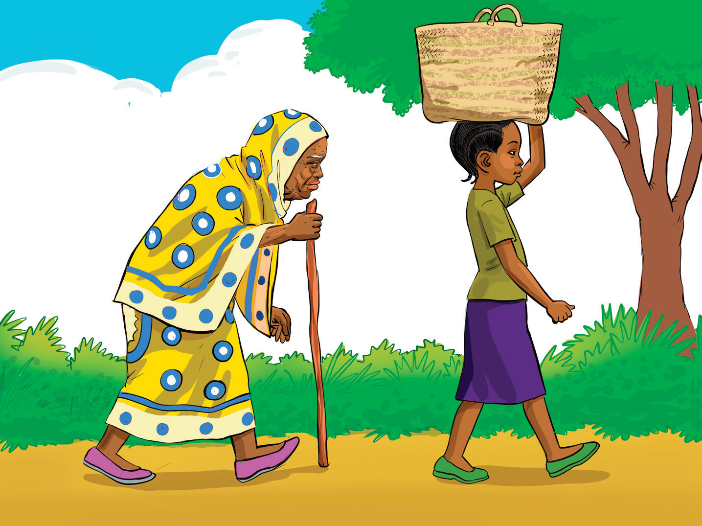

Mjukuu wa 1:Bibi ! Inaonekana katika lugha kuna hazina kubwa sana ya utamaduni wetu.
Bibi:Kabisa! Kabisa! (Bibi alivuta pumzi kidogo.)Kwa mfano, Lugha ya Kiswahili ni alama ya utambulisho wa utamaduni wetu.Kupitia lugha yetu ya Kiswahili tunaweza kuutambua, kuutunza na kuurithisha utamaduni wetu.Wageni pia hutambua utamaduni wetu kupitia lugha yetu.
Mjukuu wa 1:Bibi, leo umetufundisha mambo mengi sana.Tumejua namna utamaduni na lugha vinavyofungamana.Pia, tumejua namna lugha yetu ya Kiswahili ilivyo kielelezo cha utambulisho wa utamaduni wa Mtanzania.
Bibi:Yapo mambo mengi yanayohusiana na lugha yetu ya Kiswahili na utamaduni wetu.Haya machache yanatosha kwa leo.Siku nyingine nitawaeleza mambo mengine yanayohusu lugha yetu.Twendeni tukalale ili kesho muweze kuwahi shuleni.
Wajukuu:Asante bibi. Kwaheri. (Wanaondoka kwenda kulala.)
Bibi:Kwaherini wajukuu zangu.